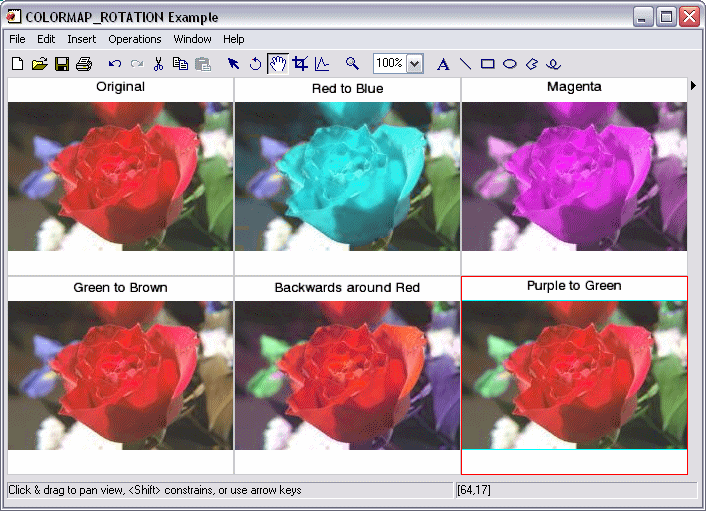

The COLORMAP_ROTATION function maps pixels within a given hue range to another hue range, using the HSV hue component. The HSV color model describes the hue component as a circular value from 0 to 360 degrees where red is located at 0 degrees, green is 120 degrees, and blue is 240 degrees.
A hue range is specified as a pair of start and stop angles and a direction indicator. The angles increase in a counter-clockwise direction. The default direction is counter-clockwise, which describes the direction of the hue range as it is mapped from the start angle to the stop angle.
The source range is linearly mapped to the destination range.
Result = COLORMAP_ROTATION( Image , SrcAngleStart , SrcAngleStop , DstAngleStart , DstAngleStop [, / SOURCE_CW ] [, / DEST_CW ])
Result is a byte array of the same dimensions as the input Array.
A 3D array of any basic type containing the input image with data in range [0-255]. The image must contain RGB data and be of the form [3, m , n ].
A floating-point value specifying the starting position of the source angle on the HSV color wheel, in degrees. Values between SrcAngleStart and SrcAngleStop will be replaced by values from the destination range.
A floating-point value specifying the ending position of the source angle on the HSV color wheel, in degrees. Values between SrcAngleStart and SrcAngleStop will be replaced by values from the destination range.
A floating-point value specifying the starting position of the destination angle on the HSV color wheel, in degrees. Values between DstAngleStart and DstAngleStop will replace values in the source range.
A floating-point value specifying the ending position of the destination angle on the HSV color wheel, in degrees. Values between DstAngleStart and DstAngleStop will replace values in the source range.
Set this keyword to measure the source angle clockwise from SrcAngleStart . By default, the angle is measured in the counter-clockwise direction.
Set this keyword to measure the destination angle clockwise from DstAngleStart . By default, the angle is measured in the counter-clockwise direction.
The following sequence will change the red hues in a rose to cyan:
file = FILEPATH('rose.jpg', SUBDIR=['examples', 'data'])
IOPEN, file, rose
result = COLORMAP_ROTATION(rose, 310, 50, 160, 185)
IIMAGE, result, /TRUE
This example applies COLORMAP_ROTATION to the rose jpeg in various ways and then visualizes them side-by-side. In this code section, we read the rose image file and do the color map rotations:
file = FILEPATH('rose.jpg', SUBDIR=['examples', 'data'])
IOPEN, file, rose0
; These values map red hues to blue:
rose1 = COLORMAP_ROTATION(rose0, 310, 50, 160, 200)
;These values map all hues to magenta:
rose2 = COLORMAP_ROTATION(rose0, 0, 360, 300, 300)
; These values map green hues to brown:
rose3 = COLORMAP_ROTATION(rose0, 65, 150, 25, 60)
; These values rotate the entire spectrum "backwards"
; around the pure red hue:
rose4 = COLORMAP_ROTATION(rose0, 0, 360, 360, 0, /DEST_CW)
; These values make the purple flowers look like
; green leaves:
rose5 = COLORMAP_ROTATION(rose0, 130, 310, 240, 60, /DEST_CW)
Now, we display the results:
; Display the images side by side:
dims = [(SIZE(rose0))[2]*3, (SIZE(rose0))[3]*2+100]
IIMAGE, rose0, VIEW_GRID=[3,2], VIEW_TITLE='Original', $
DIMENSIONS=dims, WINDOW_TITLE='COLORMAP_ROTATION Example', $
/NO_SAVEPROMPT
IIMAGE, rose1, /VIEW_NEXT, VIEW_TITLE='Red to Blue'
IIMAGE, rose2, /VIEW_NEXT, VIEW_TITLE='All Magenta'
IIMAGE, rose3, /VIEW_NEXT, VIEW_TITLE='Green to Brown'
IIMAGE, rose4, /VIEW_NEXT, VIEW_TITLE='Backwards around Red'
IIMAGE, rose5, /VIEW_NEXT, VIEW_TITLE='Purple to Green'
; Increase the text size
ISETPROPERTY, 'text*', FONT_SIZE=40
The resulting image appears as follows:
|
 |
|
6.4 |
Introduced |